| Wykonawcy, którzy wystąpili w piątek i sobotę (15 i 16 sierpnia): | ||
| 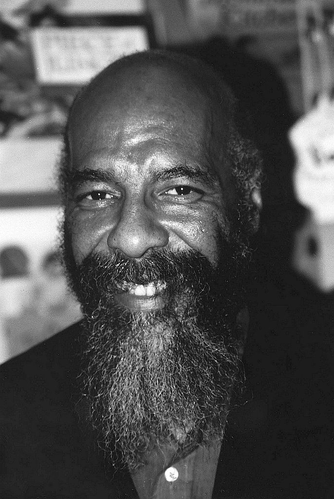 | Richie Havens | Wystąpił: 17:07-19:00 |
| 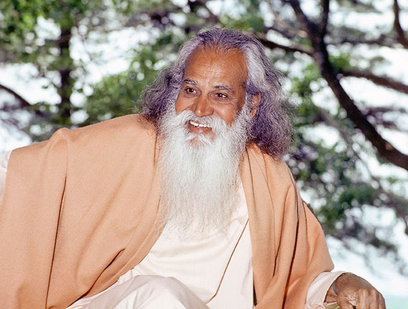 | Swami Satchidananda | Wystąpił: 19:10-19:20 |
| 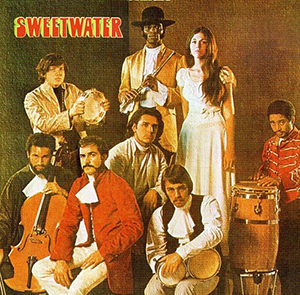 | Sweetwater | Wystąpił: 19:30-20:10 |
| 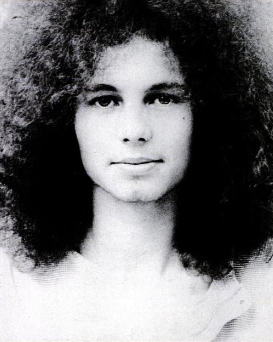 | Bert Sommer | Wystąpił: 20:20-21:15 |
| 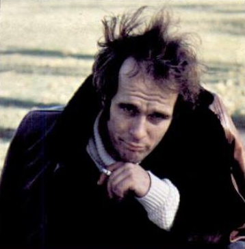 | Tim Hardin | Wystąpił: 21:20-21:45 |
| 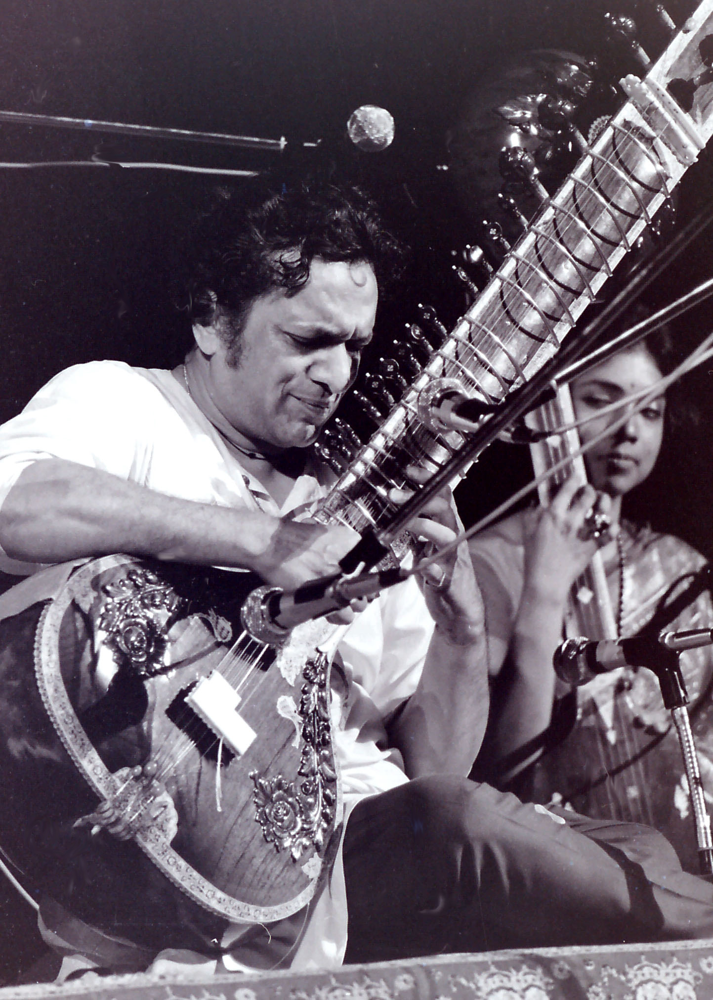 | Ravi Shankar | Wystąpił: 22:00-22:35 |
| 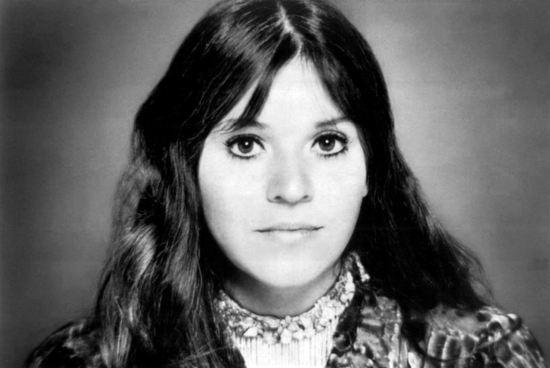 | Melanie | Wystąpił: 22:50-23:20 |
| 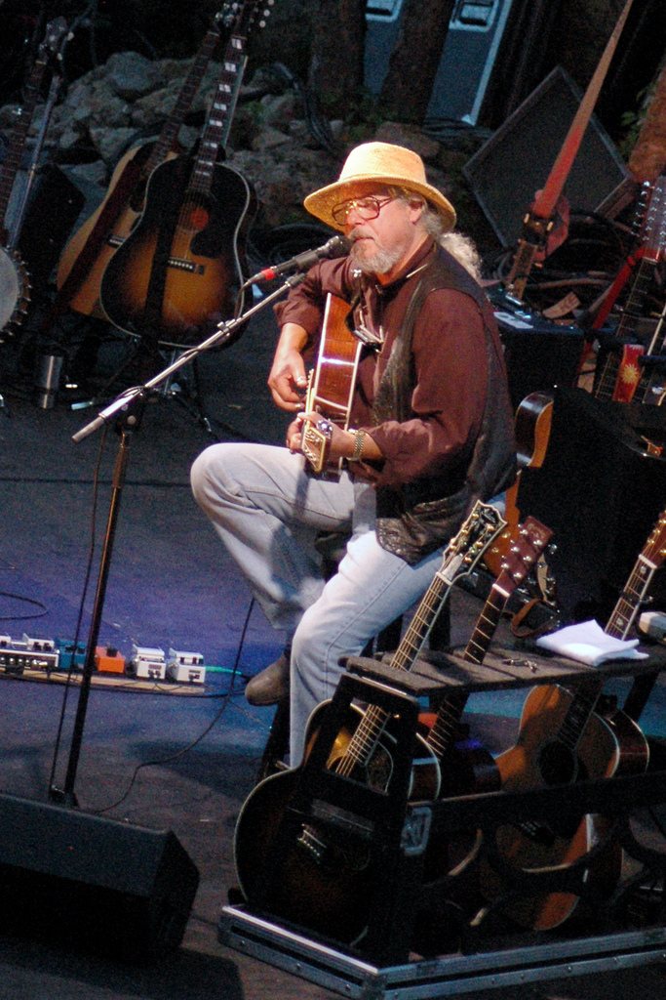 | Arlo Guthrie | Wystąpił: 23:55-00:25 |
| 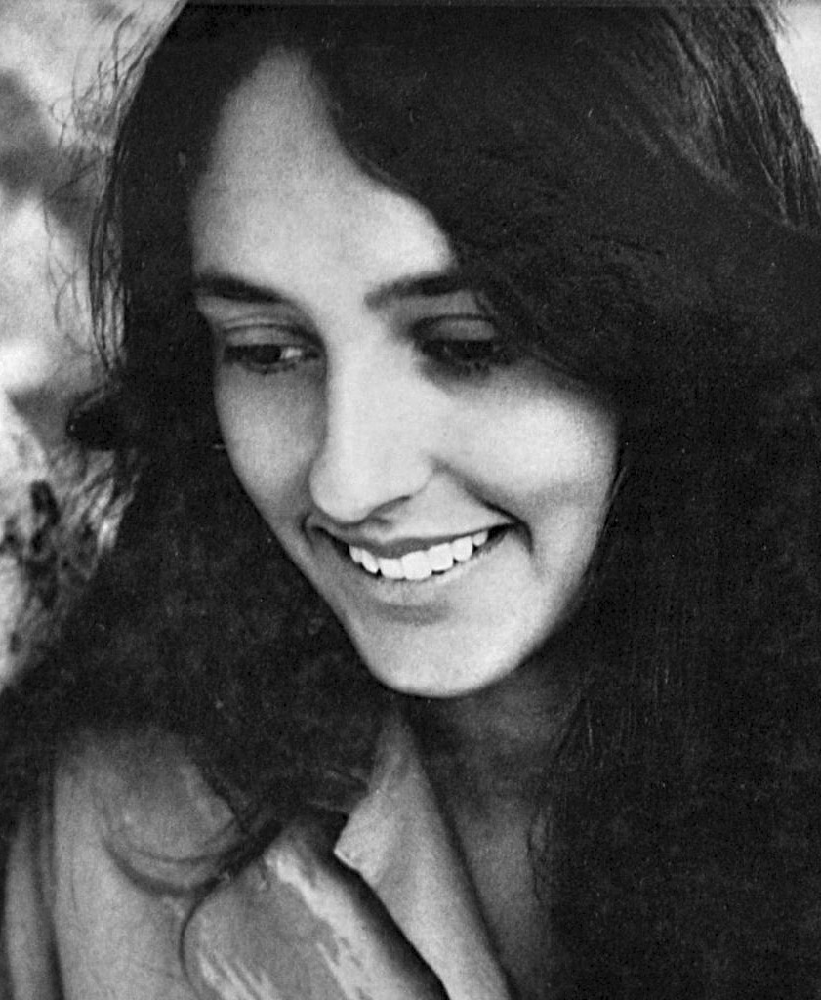 | Joan Baez | Wystąpił: 00:55-02:00 |
| Wykonawcy, którzy wystąpili rano w sobotę i niedzielę (16 i 17 sierpnia) | ||
| 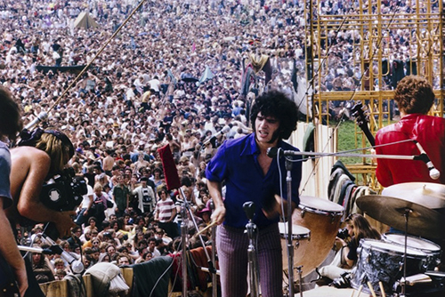 | Quill | Wystąpił: 12:15-12:45 |
| 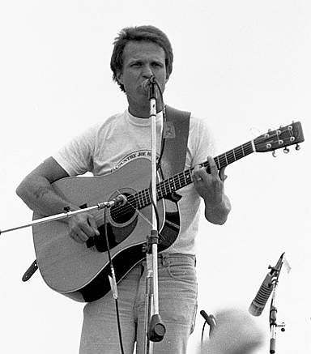 | Country Joe McDonald | Wystąpił: 13:00–13:30 |
| 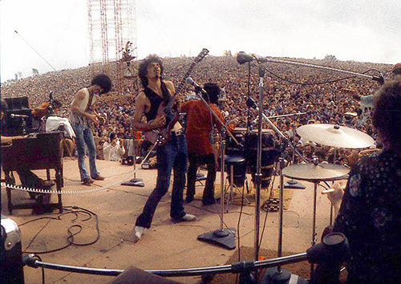 | Santana | Wystąpił: 14:00–14:45 |
| 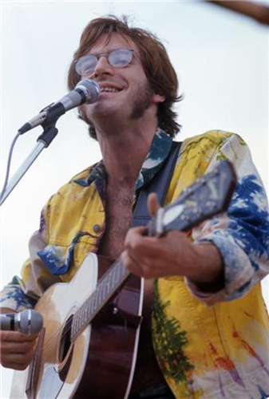 | John Sebastian | Wystąpił: 15:30-15:55 |
| 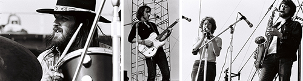 | Keef Hartley Band | Wystąpił: 16:45-17:30 |
| 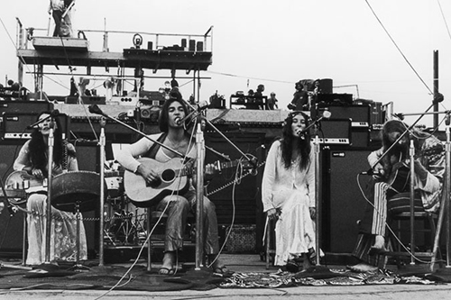 | The Incredible String Band | Wystąpił: 18:00-18:30 |
| 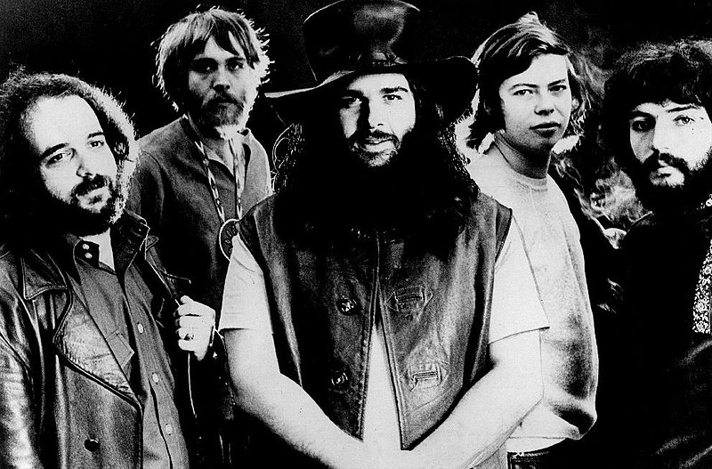 | Canned Heat | Wystąpił: 19:30-20:30 |
| 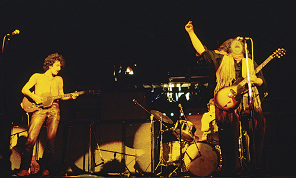 | Mountain | Wystąpił: 21:00-22:00 |
 |
Grateful Dead | Wystąpił: 22:30-0:05 |
| 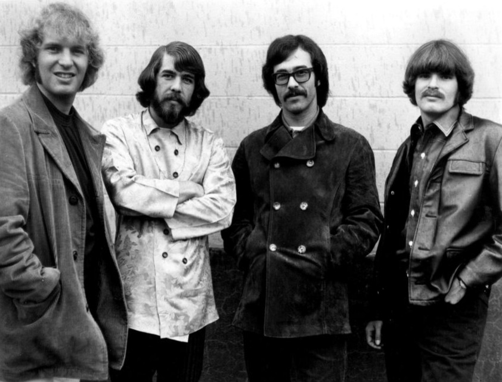 | Creedence Clearwater Revival | Wystąpił: 0:30-1:20 |
| 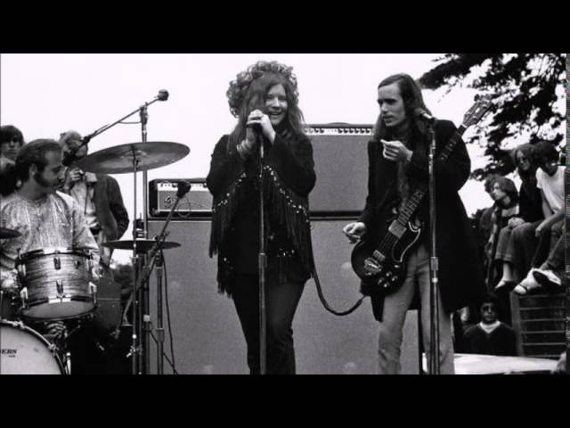 | Janis Joplin with The Kozmic Blues Band | Wystąpił: 2:00-3:00 |
| 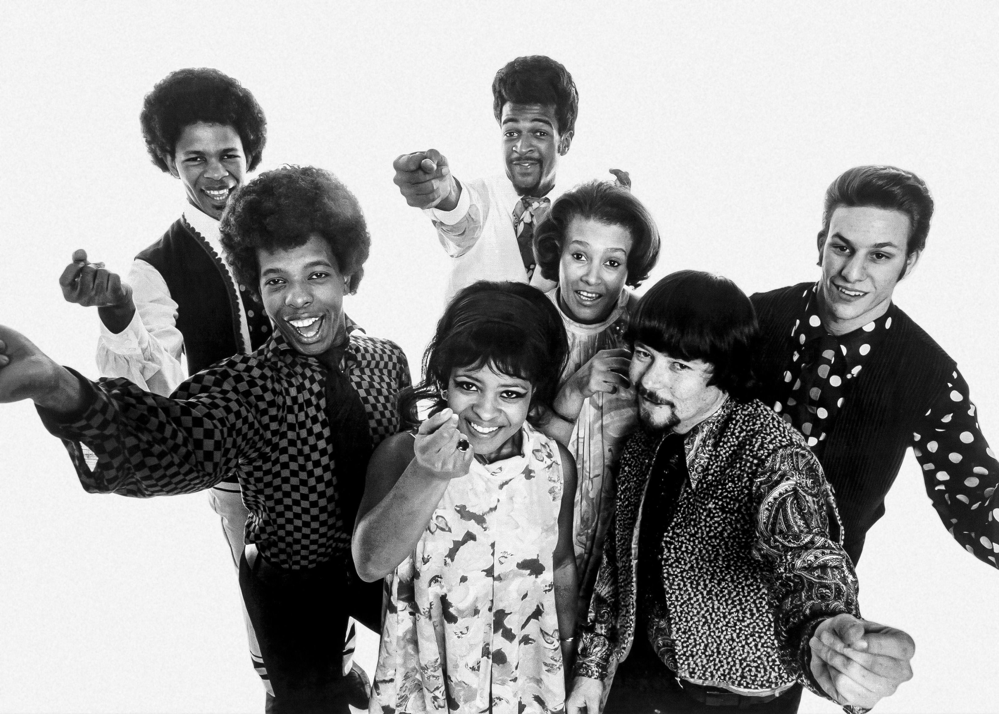 | Sly & the Family Stone | Wystąpił: 3:30-4:20 |
| 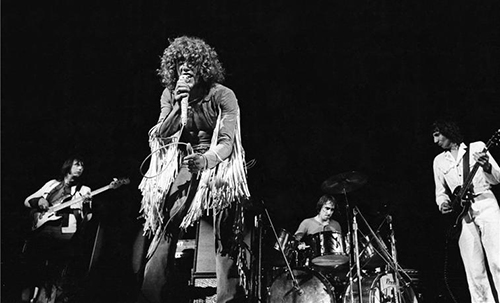 | The Who | Wystąpił: 5:00-6:05 |
| 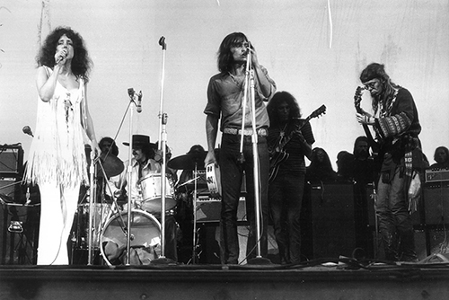 | Jefferson Airplane | Wystąpił: 8:00-9:40 |
| Wykonawcy, którzy wystąpili rano w niedzielę i poniedziałek (17 i 18 sierpnia): | ||
| 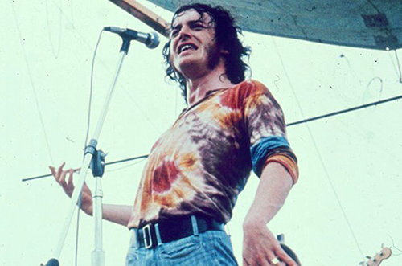 | Joe Cocker i The Grease Band | Wystąpił: 14:00-15:25 |
| 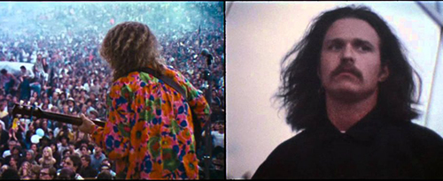 | Country Joe and Fish | Wystąpił: 18:30-20:00 |
| 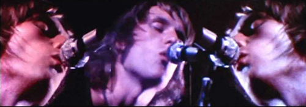 | Ten Years After | Wystąpił: 20:15-21:15 |
| 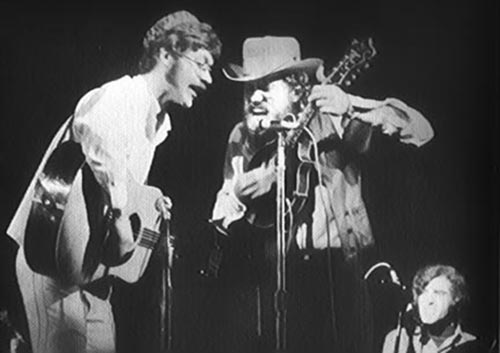 | The Band | Wystąpił: 22:00-22:50 |
| 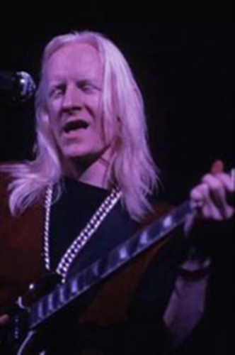 | Johnny Winter | Wystąpił: 00:00-01:05 |
| 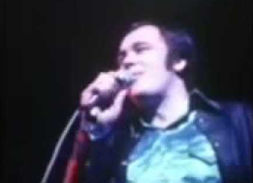 | Blood, Sweat & Tears | Wystąpił: 01:30-02:30 |
| 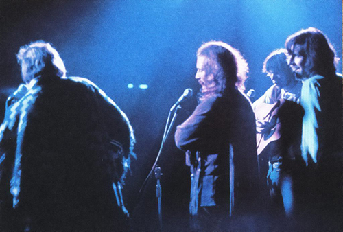 | Crosby, Stills and Nash | Wystąpił: 03:00-04:00 |
| 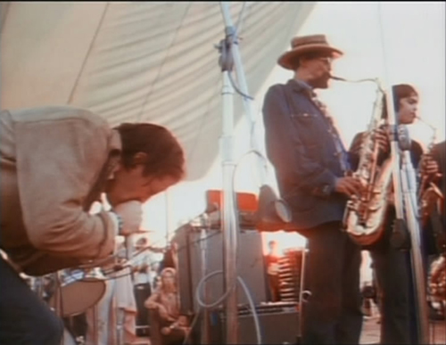 | Paul Butterfield Blues Band | Wystąpił: 06:00-06:45 |
| 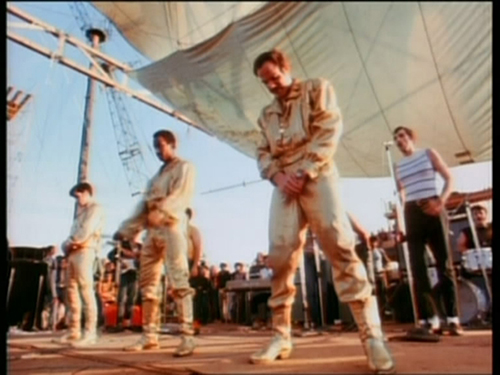 | Sha Na Na | Wystąpił: 07:30-08:00 |
 |
Jimi Hendrix/Gypsy Sun and Rainbows | Wystąpił: 09:00-11:10 |